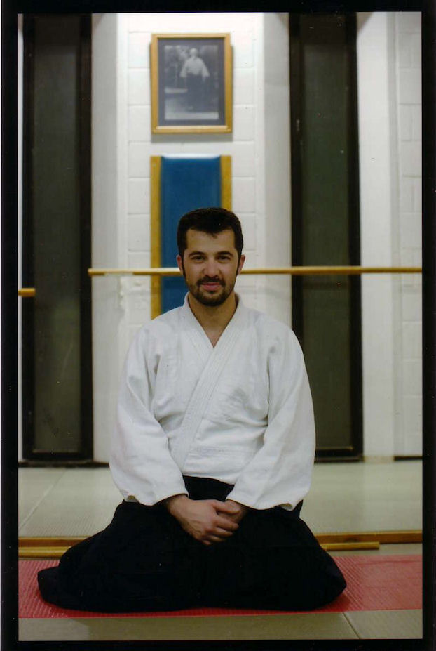
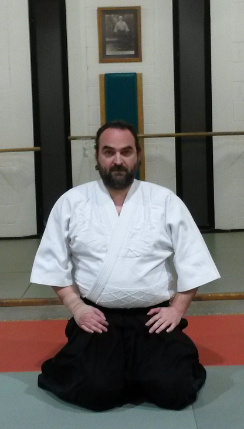
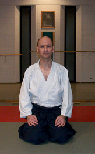
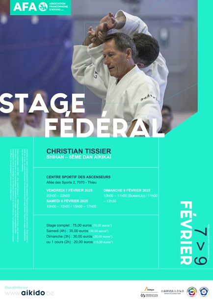
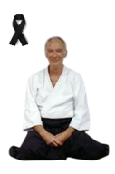
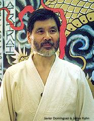
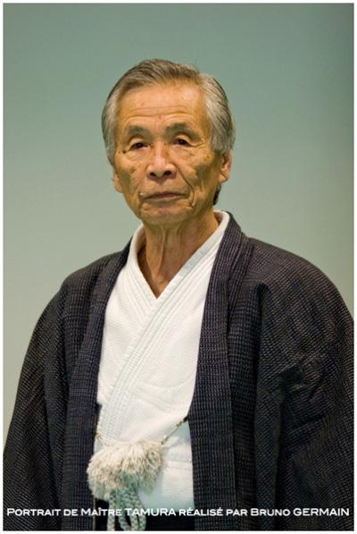

École d'Aïkido Traditionnel · Aïkikaï
L'art de
l'harmonie.
Depuis 1987, le Musubi Dojo enseigne à Jurbise un aïkido authentique : un art martial sans compétition, ouvert à toutes et tous, pour cultiver la maîtrise de soi, la souplesse du corps et de l'esprit.
Académie Provinciale de Police · Route d'Ath 25-35, 7050 Jurbise
Qu'est-ce que l'Aïkido
Un art martial
adapté au monde moderne
Créé par O'Senseï Morihei Ueshiba, l'aïkido est la synthèse des arts martiaux japonais. Ses techniques, essentiellement défensives, permettent de répondre à toute agression sans jamais chercher à détruire ni humilier l'adversaire. Une véritable école de non-violence.
Pour les dames comme pour les hommes, sans limite d'âge.
Neutraliser l'intention agressive, en préservant l'intégrité.
Contrôle des émotions, une excellente thérapie anti-stress.
Développer la souplesse et l'harmonie intérieure.
Le Dojo
Horaires, tarifs & inscription
L'école est en « portes ouvertes » pendant ses dix mois d'ouverture. Venez pousser la porte du tatami.
Horaires
- Adultes · Lundi20h00 à 22h00
- Adultes · Mercredi20h00 à 22h00
- Adultes · Dimanche10h30 à 12h30
- Enfants · Dimanche9h30 à 10h30
Adultes à partir de 14 ans.
Ajouter à mon agendaTarifs
- Cotisation adultes25 € / mois
- Étudiants (14 ans et +)20 € / mois
- Assurance-licence AFA35 € / an
Les 2 premiers cours d'essai sont gratuits.
Inscription
- Certificat médicalRécent
- Essai1 training
- EnsuiteJudogi + zori
Affilié à l'Association Francophone d'Aïkido.
Nous trouver
Un dojo traditionnel, chaleureux, à deux minutes du pont de Nimy.
Route d'Ath 25-35, 7050 Jurbise
L'enseignement
Nos professeurs
Une transmission directe, dans la lignée de Sugano Shihan et du Hombu Dojo de Tokyo.

Benoît Toulotte
6ᵉ dan Aïkikaï, Shidoin · Aide-moniteur Adeps

Frédéric Buchon
2ᵉ dan Aïkikaï · Breveté Adeps

Gilles Modart
1ᵉʳ dan Aïkikaï
Directeur technique : Louis Van Thieghem Shihan, 7ᵉ dan Aïkikaï, membre de la Commission Fédérale des Grades de l'AFA.
En images
La vie sur le tatami
Quelques instants de pratique dans notre dojo traditionnel.
Membres du club : de nouvelles photos en haute résolution sont les bienvenues pour enrichir cette galerie.
Notre histoire
Bientôt quatre décennies
sur le tatami
Naissance du Musubi Dojo dans les locaux de l'Académie de Police de Jurbise, fondé par Jean Swaelens et Anne Danloy, tous deux formés par les maîtres japonais Sugano et Tamura Shihan.
Le dojo accueille un stage fédéral dirigé par Tamura Shihan, 8ᵉ dan, rassemblant une centaine d'aïkidoka de Belgique et d'ailleurs.
Maître Jean De Dobbeleer, 6ᵉ dan et plus haut gradé de l'AFA, rejoint le club comme directeur technique.
Benoît Toulotte devient professeur adjoint du Musubi Dojo, aux côtés de Jean Swaelens.
Ouverture d'une section enfants à l'initiative de Benoît Toulotte et Frédéric Buchon.
Jean Swaelens transmet sa charge de Dojo Cho à Benoît Toulotte, perpétuant l'esprit du dojo.
Le sens de notre nom
Musubimusubi · mouzoubi
« Processus d'unification des contraires. Est mouvement, car sans mouvement, l'union est impossible. Symbolisé par la spirale qui recycle constamment son énergie. Ni commencement, ni fin. Toute activité est un processus de mutation, et la seule constante dans l'Univers est le changement. »
Saotome Senseï
Ce nom a été choisi par Sugano Shihan sur proposition du professeur.
Techniques
Le répertoire du dojo
Un aperçu des techniques travaillées : mains nues, tanto (couteau), ken (sabre) et jo (bâton).
La progression
Grades & armes
En aïkido traditionnel, la progression se fait par grades kyu (élève), puis dan (ceinture noire), passés devant la Commission Fédérale des Grades de l'AFA et validés par le Hombu Dojo, l'Aïkikaï de Tokyo.
Les armes du dojo
L'aïkido s'étudie à mains nues, mais aussi avec les armes traditionnelles, qui affinent les déplacements, la distance et la précision.
Bokken
Sabre en bois. Il transmet les principes du sabre japonais (ken) : posture, coupe et intention.
Jo
Bâton d'environ 1,28 m. Il développe les déplacements, les frappes et la fluidité du corps.
Tanto
Couteau (en bois à l'entraînement). Il sert à étudier les défenses face à une attaque armée.
Actualités & stages
La vie du dojo
Reprise de saison
Rentrée du tatami
Le club est fermé en juillet et en août. La reprise des cours a lieu le lundi 24 août à 20h00, avec un premier cours d'honneur dirigé par Jikou Sugano, 6ᵉ dan Aïkikaï.
Stages fédéraux
Se former au-delà du dojo

Christian Tissier Shihan, 8ᵉ dan, en stage à Thieu.
Nos pratiquants participent régulièrement aux stages de l'Association Francophone d'Aïkido, animés par de hauts gradés.

In Memoriam
Jean Swaelens
Fondateur du Musubi Dojo · 5ᵉ dan Aïkikaï, Shidoin
Jean a créé le Musubi Dojo, nous a appris l'aïkido et nous en a transmis la passion. Nous lui en serons à jamais reconnaissants.


Pour aller plus loin
Bibliographie
Une sélection d'ouvrages de référence sur l'aïkido et les arts martiaux japonais, conseillés par le dojo.
Le vocabulaire du tatami
Glossaire de l'aïkido
Les termes japonais entendus au dojo, avec leur prononciation et leur signification. Tapez un mot pour filtrer.
Vous pouvez aussi télécharger le glossaire complet (fichier Excel).
Première visite
Questions fréquentes
Non, absolument pas. L'aïkido se pratique à tout âge et à tout niveau de condition physique. La souplesse et l'aisance viennent naturellement avec la pratique régulière.
Oui. Les deux premiers cours sont entièrement gratuits et sans engagement. Venez simplement pousser la porte du dojo.
Un simple training et une bouteille d'eau suffisent pour l'essai. Par la suite, une tenue de judo (judogi) et des sandales (zori) seront nécessaires.
Le cours enfants est accessible dès 6 ans, le dimanche matin. Le cours adultes accueille les pratiquants à partir de 14 ans.
Non. C'est un art martial défensif, sans compétition, animé par un esprit de non-violence. Les techniques neutralisent l'agression tout en respectant l'intégrité du partenaire.
La cotisation est de 25 € par mois pour les adultes et 20 € par mois pour les étudiants (14 ans et plus), à laquelle s'ajoute l'assurance-licence fédérale de 35 € par an.
Oui, un certificat médical récent attestant de votre aptitude à la pratique est demandé pour vous inscrire.
Rejoignez-nous
Venez essayer,
c'est gratuit
Deux cours d'essai offerts, sans engagement. Un simple training suffit pour commencer.